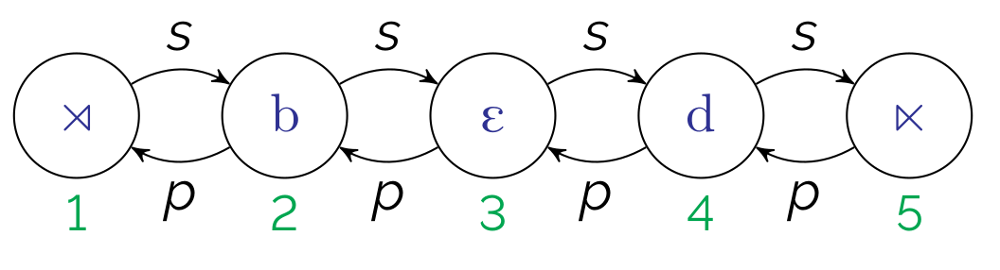
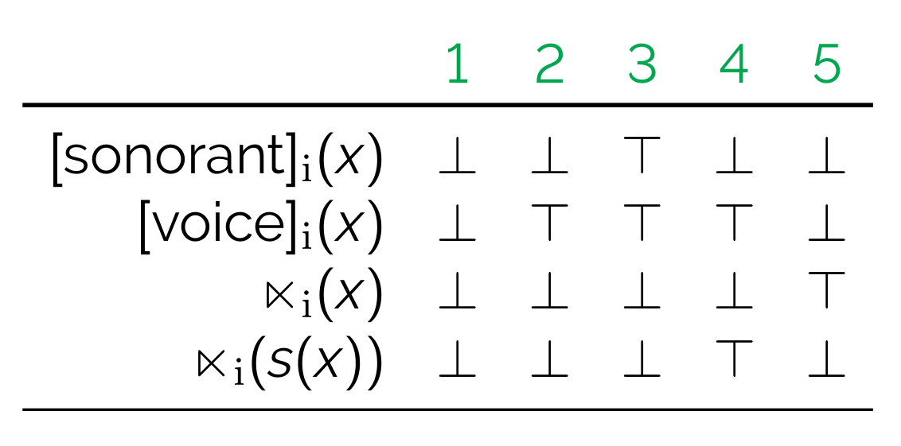
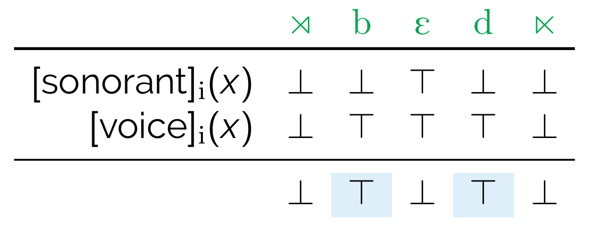
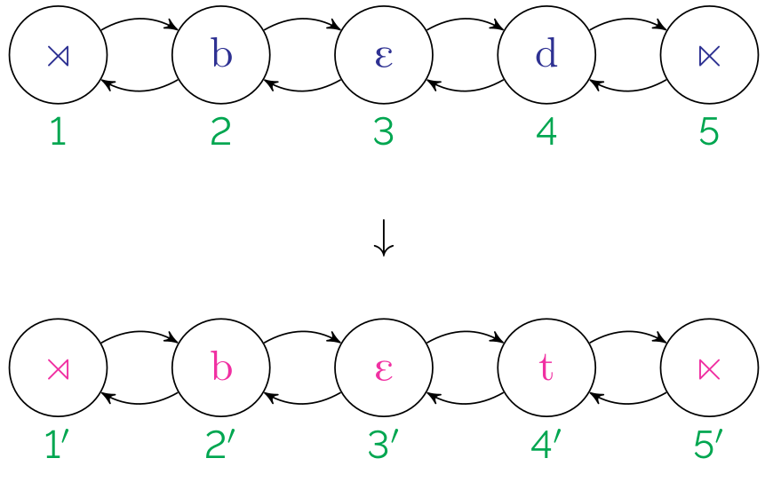
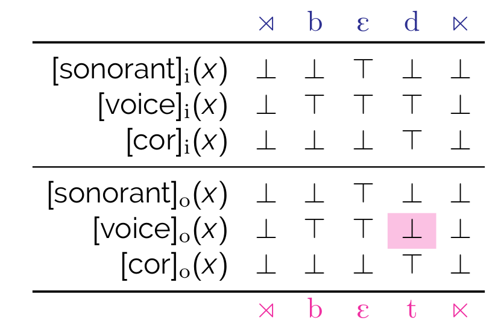

Boolean Monadic Recursive Schemes for Phonological Analysis: A tutorial
A Tutorial for the 2022 Annual Meeting on Phonology @ UCLA
Jane Chandlee (Haverford College)
Adam Jardine (Rutgers University)
Adam McCollum (Rutgers University)
Tatevik Yolyan (Rutgers University)
Overview
- A theory of phonology...
- allows us to directly state linguistically significant generalizations;
- captures abstract universals about the phonological cognitive module;
- (and is also learnable)
- Boolean monadic recursive schemes (BMRS) is a logical formalism for implementing such a theory
- An example: (put example here)
Using this site
This is a companion site to the presentation. It more or less follows the slides. Use the menu to navigate the table of contents.
Boolean Monadic Recursive Schemes (BMRS)
-
A logical characterization of a phonological process includes:
- Models (representations) that specify the set of elements in a structure, the properties of those elements, and relations between elements;
- A logical language for making statements about elements in the structure; and
- an interpretation which defines a function by specifying the elements, properties, and relations in the output structure in terms of logical statements about the input structure.
-
Pages in this section:
String models
- A string model explicitly defines all of the elements in the string with:
- indices (elements in the structure)
- order functions \(p\) and \(s\)
- properties of the indices

- We'll assume a set of (privative) featural properties

- Note:
- \(\top\) refers to true, \(\bot\) false
- \(\rtimes\) and \(\ltimes\) represent boundaries (i.e., the equivalent of #)
Logical language
The core of BMRS syntax are expressions of the form
\[\mathtt{if}~A~\mathtt{then}~B~\mathtt{else}~C\]
that return boolean values (\(\top\) or \(\bot\))
For example,
\[ \mathtt{if}~[\mathrm{son}]_i(x)~\mathtt{then}~\bot~\mathtt{else}~[\mathrm{voi}]_i(x) \]
...is \(\top\) iff \(x\) is a voiced obstruent, as shown below.

Furthermore, \(A\), \(B\), or \(C\) can be another expression. Usually this is \(C\), to chain together expressions, as in
\[ \begin{array}[t]{l} \mathtt{if}~[\mathrm{son}]_i(x)~\mathtt{then}~\bot~\mathtt{else}~\\ \mathtt{if}~[\mathrm{voi}]_i(x)~\mathtt{then}~\top~\mathtt{else}~\bot \end{array} \]
As is perhaps obvious at this point, expressions define properties. For example, we can explicitly define what it means to be a voiced obstruent using the expression above.
\[\left[\begin{array}{l}-\mathrm{son}\\+\mathrm{voi}\end{array}\right]_i(x):=\mathtt{if}~[\mathrm{son}]_i(x)~\mathtt{then}~\bot~\mathtt{else}~[\mathrm{voi]_i(x)}\]
Or what it means to be word-final.
\[ \mathrm{final}_i(x):=\mathtt{if}~\ltimes(s(x))~\mathtt{then}~\top~\mathtt{else}~\bot \]
And then what it means to be a word-final voiced obstruent.
\[ \mathrm{D\#}_i(x):=\mathtt{if}~\left[\begin{array}{l}-\mathrm{son}\\+\mathrm{voi}\end{array}\right]_i(x)~\mathtt{then}~\mathrm{final}(x)~\mathtt{else}~\bot \]
Interpretations
A map changes input structures to output structures. Another way to think about it is that, under a map, an output structure is some reflection of the input structure.

Interpretations specify maps by defining output structures in terms of the input structures (Engelfriet and Hoogeboom, 2001).

A scheme is thus a series of definitions of (output) properties. A boolean monadic recursive scheme is thus a scheme in which each property in the scheme is boolean (i.e., returns a boolean value) and monadic (i.e. unary), and the definitions are recursive (i.e., the properties being defined can be used in their own definitions).
In phonological terms, output formulas assert the conditions under which a segment is \(+\) for a given feature in the output structure.
Thus, a BMRS for word-final devoicing is as follows:
\[ \begin{array}[t]{ll} [\mathrm{son}]_o(x) := [\mathrm{son}]_i(x) \\ [\mathrm{voi}]_o(x) := \mathtt{if}~\mathrm{D\#}_i(x)~\mathtt{then}~\bot~\mathrm{else}~[\mathrm{voi}]_i(x)\\ [\mathrm{cor}]_o(x) := [\mathrm{cor}]_i(x) \\ \end{array} \]
This obtains the truth value table above.
Recursion
Consider unbounded H-tone spread to penult.
\[ \begin{array}[t]{lcl} \acute{\sigma}\sigma\sigma & \mapsto & \acute{\sigma}\acute{\sigma}\sigma \\ \sigma\acute{\sigma}\sigma\sigma\sigma\sigma & \mapsto & \sigma\acute{\sigma}\acute{\sigma}\acute{\sigma}\acute{\sigma}\sigma \\ \sigma\sigma\acute{\sigma}\sigma\sigma\sigma & \mapsto & \sigma\sigma\acute{\sigma}\acute{\sigma}\acute{\sigma}\sigma \\ \sigma\acute{\sigma}\sigma\sigma\sigma\sigma\sigma & \mapsto & \sigma\acute{\sigma}\acute{\sigma}\acute{\sigma}\acute{\sigma}\acute{\sigma}\acute{\sigma}\sigma \\ \mathrm{etc.} \end{array} \]
This is an output-oriented process. That is, whether a syllable is H-toned depends on the output tonal value of the preceding syllable.
Let \(\acute{\sigma}_i(x)\) represent the input contrast between H and non-H syllables, and \(\acute{\sigma}_o(x)\) representing the same in the output, we can do this explicitly in BMRS using a recursive definition of \(\acute{\sigma}_o(x)\).
The below is a first approximation, although it is a bit wrong.
\[ \acute{\sigma}_o(x):= \mathtt{if}~\acute{\sigma}_o(p(x))~\mathtt{then}~\top~\mathtt{else}~\acute{\sigma}_i(x) \]
This works as shown below:
\[ \begin{array}[t]{rccccccc} \mathrm{in:} & \sigma & \acute{\sigma} & \sigma & \sigma & \sigma & \sigma \\ \acute{\sigma}_i(x) & \bot & \top & \bot & \bot & \bot & \bot \\ \acute{\sigma}_o(x) & \bot & \top & \top & \top & \top & ^*\top \\ \mathrm{out:} & \sigma & \acute{\sigma} & \acute{\sigma} & \acute{\sigma} & \acute{\sigma} & \acute{\sigma} \\ \end{array} \]
The H tone spreads leftward all the way to the final syllable, as indicated by \(^*\top\). So we preempt this in the case that \(x\) is the final syllable:
\[ \acute{\sigma}_o(x):= \begin{array}[t]{l} \mathtt{if}~\mathrm{final}(x)~\mathtt{then}~\bot~\mathtt{else}\\ \mathtt{if}~\acute{\sigma}_o(p(x))~\mathtt{then}~\top~\mathtt{else}\\ \acute{\sigma}_i(x) \end{array} \]
In this way, \(\mathrm{final}(x)\) acts like a higher-ranking constraint, blocking the spread of the H tone only in the final syllable:
\[ \begin{array}[t]{rccccccc} \mathrm{in:} & \sigma & \acute{\sigma} & \sigma & \sigma & \sigma & \sigma \\ \acute{\sigma}_i(x) & \bot & \top & \bot & \bot & \bot & \bot \\ \acute{\sigma}_o(x) & \bot & \top & \top & \top & \top & \bot \\ \mathrm{out:} & \sigma & \acute{\sigma} & \acute{\sigma} & \acute{\sigma} & \acute{\sigma} & \sigma \\ \end{array} \]
Review
BMRSs are
- logical descriptions of maps
- series of definitions of the form \[ [\mathrm{F}]_o(x) = \begin{array}[t]{l} \mathtt{if}~\mathrm{(condition 1)}(x)~\mathtt{then}~{\top/\bot}~\mathtt{else}\\ \mathtt{if}~\mathrm{(condition 2)}(x)~\mathtt{then}~{\top/\bot}~\mathtt{else}\\ \vdots\\ [\mathrm{F}]_i(x) \end{array} \]
- computationally restrictive (Bhaskar et al., 2020; [pdf;pub link]).
Iny
Pages in this section:
- Statement of the problem
- The solution (To be posted later)
The problem
Background in Iny
Iny (Ribeiro, 2002 2012) has regressive ATR harmony in which both input and output ATR values of triggers are important. The surface vowel inventory is as follows.
| [+ATR] | a ã ə̃ (ə) ɔ ɛ ʊ ɨ ɪ |
| [-ATR] | ə o õ e u i̘ i ĩ |
The following forms illustrate harmony occuring.
| /r-ɛ-rɔ=r-e/ | [rerore] |
| /b-∅-r-krɔ=kre/ | [bikrokre] |
| /r-ɛ-hãɗɛ=r-e/ | [rɛhãɗere] |
The following forms harmonize as well, but in a different way. What is the difference? Why?
| /brɔrɛ-dĩ/ | [broreni] |
| /wa-θɛ-rit͡ʃɔrɛ/ | [waθerit͡ʃɔrɛ] |
| /kɔɗʊ-dĩ/ | [kɔɗuni] |
| /r-ɛ-hI=r-e | [rɛhire] |
The following definitions and chart may help you sort things out. Using these analytical categories, think about how high, mid, and low vowels behave with respect to ATR harmony.
- Triggers: for some vowel \(V\) at index \(x\), \(V_x\), if underlying [+ATR] on \(V_x\) results in \(V_{x-1}\) becoming [+ATR], then \(V_x\) triggers [+ATR] harmony.
- Undergoes: for some vowel \(V\) at index \(y\), \(V_y\), if [+ATR] (underlying or derived) on \(V_{y+1}\) results in \(V_y\) becoming [+ATR], then \(V_y\) undergoes [+ATR] harmony.
- Propagates: for some vowel \(V\) at index \(V_z\), if [+ATR] (underlying or derived) on \(V_{z+1}\) results in \(V_z\) and \(V_{z-1}\) becoming [+ATR], then \(V_z\) propagates [+ATR].
Analysis
There are two natural classes we will want to refer to. Let's define those first.
- \([+\mathrm{ATR},+\mathrm{hi}]_i(x)=\)
- \([+\mathrm{ATR},-\mathrm{hi},-\mathrm{lo},-\mathrm{nas}]_o(x)=\)
Now we can define a BMRS for Iny. Assume the following output features. Hint: How are you going to capture the directionality?
- \([\mathrm{high}]_o(x)=\)
- \([\mathrm{low}]_o(x)=\)
- \([\mathrm{nasal}]_o(x)=\)
- \([\mathrm{ATR}]_o(x)=\)
Open Questions
The following would be great BMRS-related projects for submitting to AMP 2023.
- What restrictions should we put on BMRS for defining natural classes?
- What does a tertiary feature system look like in BMRS? (Turkish voicing alternations)
- BMRS captures elsewhere condition-type effects well. What about non-derived environment blocking?
- What is the status of intermediate representations in BMRS? (Adam M. adds Arapahoe citation)
- How does BMRS capture the typology of stress patterns? For example, that of Gordon 2002?
...and many more!
Bibliography
The following are links to some literature for learning more about BMRS.
-
Bhaskar, S., Chandlee, J., Jardine, A., and Oakden, C. (2020). Boolean monadic recursive schemes as a logical characterization of the subsequential functions. In Language and Automata Theory and Applications - LATA 2020, Lecture Notes in Computer Science, pg. 157–169. Springer. [pdf;pub link]
-
Chandlee, J. and Jardine, A. (2021). Computational universals in linguistic theory: Using recursive programs for phonological analysis. Language 93:485–519. [pdf;pub link]
-
Jardine, A. and Oakden, C. (to appear). Process-specific constraint effects in BMRS. Linguistic Inquiry. [pdf]
-
McCollum, A. and Jardine, A. (2022). Input- and output-oriented generalizations in Iny ATR harmony. Rutgers University. [lingbuzz]
-
Oakden, C. (2021). Modeling phonological interactions using recursive schemes. PhD thesis, Rutgers University. [pdf]